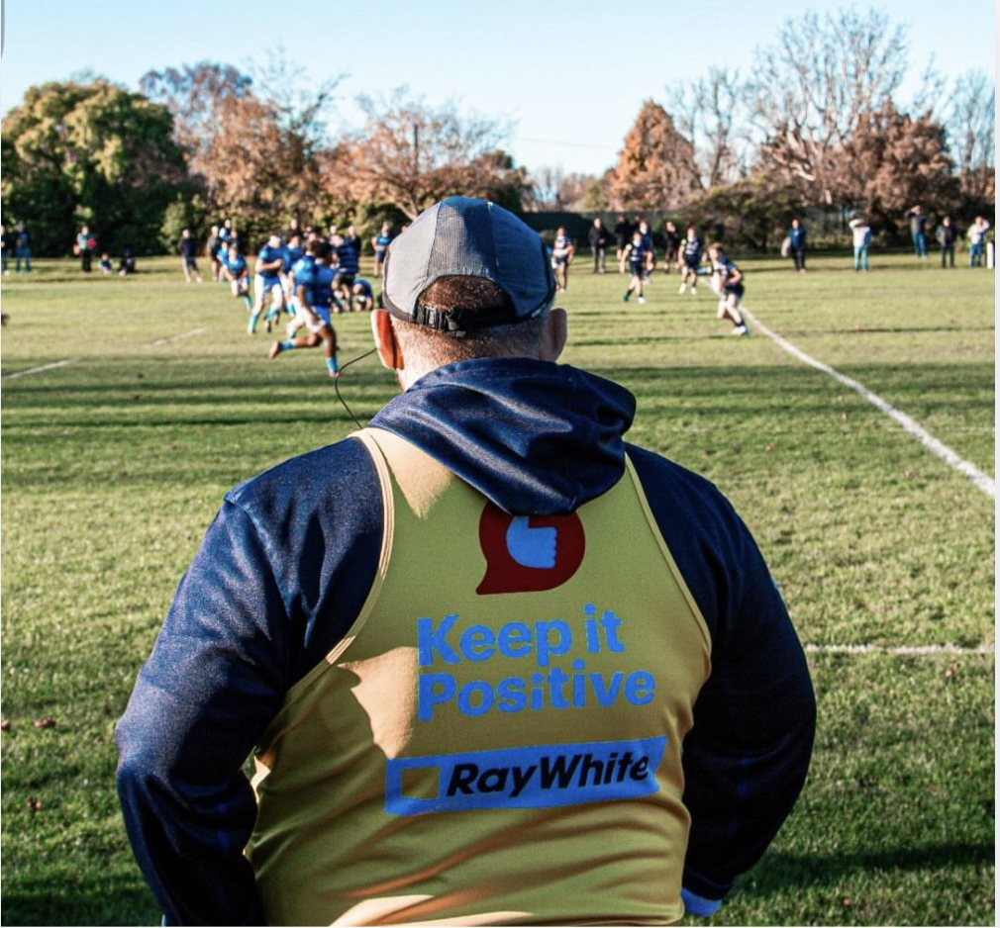
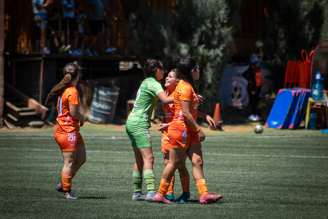

Language is a funny thing. We often hear people talking about the power of words. In sport, we throw around phrases like mental toughness, resilience, high standards, and self-belief. Some of these words end up plastered across changing room walls, printed on team shirts, or repeated in conversations about what makes a successful athlete.
But sometimes I wonder how often we actually stop to consider what they mean, or how the language we use shapes the way we understand ourselves and the people around us.
This is an article I’ve been thinking about writing for a while. A few reflections from my own playing days, some lessons I’ve continued to learn through coaching, and a psychological idea that has increasingly influenced how I think about both. It also feels like an appropriate time to finally put some of those thoughts out onto the old internet.
On 10 November 2026, the world of psychology lost someone who made an extraordinary contribution to how we understand and support people experiencing psychological distress: Dr Marsha Linehan (American Association of Suicidology, 2026). Now, I appreciate that if you’re reading this from the world of sport, there’s a reasonable chance that name doesn’t mean a great deal to you. But bear with me.
Marsha developed Dialectical Behaviour Therapy (DBT), an approach that has transformed how psychologists support people experiencing profound emotional distress, including those who have spent much of their lives feeling misunderstood or struggling to find a way forward. At the heart of her work was a commitment to helping people build what she called a life worth living. And one of the ideas she championed was deceptively simple:
We can accept ourselves and our circumstances as they are, while simultaneously working towards change.
Two things that might initially appear contradictory can coexist. It’s something that has become increasingly important in my clinical work, but it’s also an idea that I wish I’d understood much earlier in my sporting life.
Because, looking back, I think I spent a fair amount of my playing career believing that acceptance and improvement were somehow competing ideas. And, if I’m being reflective, I carried some of that same thinking into coaching.
The donkey, the carrot, and a rather uncomfortable reflection
There’s an old analogy about getting a donkey up a hill. You could dangle a carrot in front of its face, encouraging it towards where you want it to go. Or you could stand behind it and give it a whack, hoping the discomfort will make it move faster.
Now, obviously, neither is a particularly sophisticated approach to working with donkeys. But I think the analogy captures something interesting about the way we often approach motivation in sport.
When I reflect on my own rugby playing days, I was very much someone who believed in the second approach. Not literally with donkeys, thankfully. But in the way I spoke to myself.
If I made a mistake, I often felt that I needed to be hard on myself. If I wasn’t performing where I wanted to be, my instinct was to focus on what wasn’t good enough. I believed that dissatisfaction, frustration, and sometimes fairly brutal self-criticism were necessary ingredients for getting better. I think part of me worried that if I became too accepting of where I was, I’d lose the drive to improve.
Self-compassion sounded nice in theory. But in a competitive environment, where selection, performance, and results seemed to matter so much, it could feel uncomfortably close to letting myself off the hook. Surely, if I wanted to become a better rugby player, I needed to be dissatisfied with the player I currently was?
Looking back, I can see how much of a false choice that was. I had created a situation in which wanting to improve seemed to require being unhappy with myself. And although that approach might sometimes have pushed me towards action, it came with a cost. The negative self-talk, the frustration, and the mental weight of constantly measuring myself against where I thought I should be.
The strange thing is that I could be incredibly committed to improving while also making the experience of improvement unnecessarily difficult. That’s where I wish I’d understood dialectical thinking.
- Because I could have acknowledged that my performance wasn’t where I wanted it to be and recognised the effort, strengths, and progress that were already there.
- I could have felt disappointed in myself and treated myself with some compassion.
- I could have accepted the reality of my current ability and remained fiercely committed to becoming better.
None of those things needed to cancel the other out. Perhaps I didn’t need to choose between the carrot and the stick quite so often. Perhaps the more useful question was what would actually help the donkey get up the hill.
So, what exactly is dialectical thinking?
Before going further, it’s probably worth explaining what I mean by dialectical. In DBT, dialectical thinking involves recognising that situations are often more complicated than our first interpretation suggests.
We have a natural tendency to organise experiences into opposites.
Something is good or bad.
Someone is right or wrong.
A performance is successful or unsuccessful.
A coach is supportive or demanding.
And although these distinctions can sometimes be useful, they can also leave us stuck in rather rigid ways of thinking. Dialectical thinking encourages us to consider whether different perspectives might each contain something important and whether bringing those perspectives together could lead to a more complete understanding (Chapman, 2006; Linehan, 2015).
Perhaps the most recognisable dialectic within DBT is the relationship between acceptance and change. We can acknowledge reality as it exists in the present moment, while recognising that there are things we want or need to change.
This is important because acceptance is often misunderstood.
Acceptance doesn’t mean liking something, agreeing with it, or deciding that nothing needs to be done. It means recognising what is actually happening, rather than getting caught up fighting against the fact that it has already happened.
Imagine you’ve just missed a tackle that has led to the opposition scoring. You can spend the next five minutes telling yourself how useless you are, replaying the mistake, and wishing it hadn’t happened. Or you can recognise that you missed the tackle, acknowledge the frustration, and begin focusing on what comes next.
You still need to review the mistake. You might need to work on your positioning, technique, or decision-making. Acceptance doesn’t remove any of that responsibility. It simply gives you a more useful starting point.
And this is where dialectics goes further than just saying that two things can be true. The aim isn’t always to find a compromise halfway between two positions. It’s to move towards a response that takes account of both, sometimes producing a new way of understanding or responding to the situation.
It’s not about becoming less committed to improvement. It’s about becoming more flexible in how we pursue it.
Something I’ve had to learn as a coach
I think this has been one of the more interesting reflections for me. Because although I can recognise these patterns in my playing days, I can also see how they’ve influenced my coaching.
As coaches, we often talk about creating environments where athletes feel supported, valued, and confident enough to develop. At the same time, we’re responsible for establishing standards, challenging behaviours, and helping people improve. And I think it’s easy to fall into the trap of seeing those responsibilities as competing with one another.
There have certainly been times in my coaching where I’ve struggled to hold both. Sometimes I’ve leaned heavily into understanding and supporting an athlete, perhaps becoming reluctant to have a difficult conversation because I knew how much effort they were putting in. Other times, particularly when I felt something needed to change, I could become much more focused on the outcome, the standard, or the behaviour that wasn’t good enough.
When I reflect on those experiences now, I can recognise a tendency to swing between those positions rather than genuinely holding them together. It’s an interesting thing to acknowledge because neither position was necessarily coming from a bad place.

Wanting athletes to feel supported matters. Wanting athletes to improve matters. But when we treat those things as alternatives, we can end up doing neither particularly well.
Take a young player who continues to make the same defensive mistake.
One response might be to reassure them constantly.
“Don’t worry about it. You’re trying hard. You’ll get there.”
Another might be to become increasingly frustrated.
“We’ve been through this three times. You need to sort it out.”
The difficulty is that both responses, on their own, can miss something important. The first might recognise the player’s effort without giving them the clarity or support they need to improve. The second might communicate the required standard without understanding why they’re struggling to meet it.
A more dialectical response might be:
“I can see how hard you’re working on this, and I know you’re frustrated it’s not coming together yet. We also need to recognise that this is something you need to improve. So let’s work out what’s getting in the way.”
Notice that the standard hasn’t changed. We’re not pretending the mistake doesn’t matter. But we’re also not asking the player to feel inadequate before they’re allowed to improve. We’re acknowledging their experience while still supporting meaningful change.
That’s a distinction I’ve become increasingly interested in.
Can we create sporting environments where people feel genuinely valued as individuals, while still being challenged to become better?
I think the answer is yes. But I also think it requires a much more deliberate effort than we sometimes appreciate.
When we stop being dialectical
One of the challenges is that we don’t always notice when our thinking becomes rigid. Particularly in sport, where emotions, expectations, and pressure can make our first interpretation feel like the only reasonable one.
Think about some of the statements we hear after matches.
“We were absolutely terrible today.”
“He just doesn’t care enough.”
“That was a brilliant performance.”
“She’s not coachable.”
Sometimes there’s something valid within those observations. But rarely do they tell the whole story.
A team can play poorly and still do some things well. A player can appear disengaged while genuinely caring about their performance. A team can win convincingly while displaying habits that could create problems against stronger opposition. And a coach can make a reasonable decision while still overlooking something important from an athlete’s perspective.
Dialectical thinking asks us to remain open to that additional information. Not because every interpretation deserves equal weight, but because our first understanding might be incomplete.
There are a few common traps worth recognising.
1. Acceptance becomes avoidance
Sometimes we become so focused on being supportive that we avoid addressing behaviours that need to change. We don’t challenge poor preparation because the athlete has had a tough week. We overlook a missed commitment because we don’t want to damage the relationship. We finish a poor performance review by telling everyone they worked hard, without having an honest conversation about what needs improving.
The intention might be compassionate. But over time, this can become unhelpful. Supporting people also means being willing to have difficult conversations.
2. Change becomes constant criticism
At the other extreme, everything becomes about improvement. Every mistake needs addressing. Every performance needs fixing. Every conversation becomes a reminder of where the athlete isn’t good enough yet.
This might look like high standards, but it can become exhausting. Athletes may begin hiding mistakes, withdrawing from feedback, or feeling that nothing they do is ever quite enough. And if athletes don’t feel comfortable sharing what they’re experiencing, we lose important information about what’s happening.
3. We swing between the two
This is probably the one I recognise most in myself. Being incredibly patient with an athlete for several weeks, then suddenly feeling frustrated because the behaviour hasn’t changed. Or allowing standards to drift during a successful period, only to become much more demanding after a disappointing result.
Interestingly, DBT work with adolescents and families has long identified similar patterns, including swings between excessive leniency and authoritarian control (Rathus & Miller, 2000). Of course, a sporting environment is not the same as a family receiving psychological treatment. But the underlying tension is recognisable.
- How do we remain understanding without becoming permissive?
- How do we challenge people without becoming unnecessarily controlling?
- How do we hold consistent standards without losing sight of the individual?
- And perhaps most importantly, how do we recognise when our own frustrations are beginning to shape our behaviour more than the needs of the people we’re supporting?
For me, that’s one of the genuinely useful parts of dialectical thinking. It encourages us to examine our own contribution to a situation, rather than assuming that the person standing opposite us is the only one who needs to change.
Why self-compassion isn’t the opposite of ambition
Coming back to the player I used to be, this is probably the part I find most interesting. I genuinely believed that being hard on myself was part of what made me competitive. And I don’t think I’m alone in that. Many athletes have grown up in environments where self-criticism is treated almost as evidence of commitment.
If you’re frustrated after a loss, it shows you care. If you’re never satisfied, it shows you’re hungry. If you’re constantly demanding more of yourself, it shows you have high standards. And sometimes these things can reflect how much sport matters to someone.
But here’s the question I wish I’d asked myself earlier:
Does being hard on yourself actually help you improve, or have you simply become accustomed to using it as motivation?
Because those are not necessarily the same thing.
Psychological research offers a useful challenge to the idea that compassion makes us complacent. Breines and Chen (2012), for example, found across four experiments that responding to personal weaknesses or failures with self-compassion could actually increase motivation towards self-improvement.
Sport-specific research is also encouraging. Mosewich and colleagues (2013) found that a self-compassion intervention helped women athletes reduce self-criticism, rumination, and excessive concern about mistakes. More recently, Kuchar and colleagues (2023) evaluated a self-compassion programme with university athletes, reporting improvements in self-compassion and perceived performance alongside reductions in self-criticism.
These studies don’t tell us that self-compassion automatically makes someone a better athlete, or that it will work the same way for everyone. But they do challenge the assumption that harsh self-criticism is necessary for improvement. And I think that’s worth paying attention to.
Self-compassion isn’t about pretending that everything is fine. It’s about being able to acknowledge difficulty without making that difficulty a judgement on your worth as a person.
“That performance wasn’t good enough, and I can learn from it.”
“That performance wasn’t good enough, therefore I’m not good enough.”
It’s a subtle difference in language. But potentially a significant difference in how we relate to ourselves.
In my own experience, the second approach often made setbacks feel much bigger than they needed to be. A disappointing game could become a judgement about my ability. A mistake could become evidence of some wider personal shortcoming. And the desire to improve could become tangled up with the need to prove that I was good enough.
Looking back, I wonder how much mental energy I might have saved if I’d understood that being compassionate towards myself didn’t require lowering my expectations. It simply meant not making my own worth conditional on meeting them.
A small word that can change a conversation
This brings me back to language. One of the simplest ways we can practise a more dialectical approach is by paying attention to two very ordinary words.
Now, I’m not suggesting that we need to ban the word but from sport. That would make for some fairly strange team talks.
But consider the difference between these two statements:
“I’m really impressed with how hard you’ve worked, but your decision-making still needs improving.”
“I’m really impressed with how hard you’ve worked, and your decision-making still needs improving.”
At first glance, there’s very little difference. Both communicate that the athlete has worked hard and that something needs to improve. But the first can leave the impression that the positive feedback was simply an introduction to the criticism. The second allows both statements to stand independently.
The effort matters. The decision-making still needs work. Neither cancels the other out.
Of course, simply replacing but with and doesn’t automatically make us dialectical. If we don’t genuinely believe the first part of the statement, changing a word won’t suddenly make it authentic. And sometimes but is exactly the appropriate word.
The point isn’t the grammar itself. It’s whether we’re approaching the conversation with a willingness to recognise the full picture.
We can apply the same idea to the conversations athletes have with themselves.
- “I’m nervous, and I’m ready to compete.”
- “I’m disappointed with my performance, and I’m proud of the way I responded.”
- “I don’t agree with the selection decision, and I can still support my teammates.”
These aren’t necessarily contradictions that need resolving. They’re experiences that can exist together. And recognising that can give us more freedom in deciding what we do next.
What this might mean for teams
Where I think dialectical thinking becomes particularly interesting is within team environments. Teams are complicated. They bring together individuals with different personalities, motivations, experiences, and expectations. Everyone is expected to work towards shared goals, while still navigating their own ambitions, relationships, and challenges.
And the reality is that these competing demands don’t simply disappear because everyone agrees on a set of team values.
- A player might desperately want to start while also wanting the person selected ahead of them to succeed.
- A coach might care deeply about an athlete while recognising that they aren’t currently meeting the requirements of the team.
- A captain might need to challenge their closest friend.
- A team might need to celebrate a victory while recognising that the performance wasn’t particularly good.
These aren’t signs that something is wrong with the environment. They’re ordinary tensions that come with being part of a team. And the challenge is learning how to respond to them effectively.

Take selection, for example. Imagine an athlete who’s been dropped. They’re disappointed, perhaps angry, and genuinely believe the decision is unfair.
A coach could dismiss that frustration.
“That’s the decision. Get on with it.”
Or they could avoid the difficult conversation by making vague promises about future opportunities. Neither response is particularly useful.
A more dialectical approach would acknowledge that the athlete’s disappointment makes sense while still being clear about the selection decision. The coach doesn’t have to agree that the decision was unfair to recognise how much it matters to the athlete. And the athlete doesn’t have to agree with the decision to consider what they might do next.
There might even be something the coach needs to reflect on. Perhaps the selection criteria weren’t communicated clearly, or expectations have shifted without being discussed. That’s an important part of dialectics that I think can be overlooked in leadership.
Being willing to consider another perspective doesn’t mean surrendering your own.
It means recognising that you might not have all the information. It also means accepting that the next useful step might involve something changing on both sides.
For teams, this could influence how we approach performance reviews, feedback, difficult conversations, leadership, and accountability. We can celebrate the things we’re doing well without becoming complacent. We can challenge poor behaviour without humiliating the person responsible. We can value individual ambitions without losing sight of collective goals. And perhaps we can become better at treating disagreement as an opportunity to understand something, rather than immediately seeing it as a threat to the team.
Of course, dialectics doesn’t mean all perspectives are equally accurate, or that harmful behaviour should be tolerated. Sometimes the appropriate response is a clear boundary, a difficult decision, or a significant change. But understanding the wider context can help us make those decisions more thoughtfully.
An idea that extends beyond DBT
Although Marsha Linehan’s work is the reason I’ve been reflecting on this, I think it’s worth recognising that the broader relationship between acceptance and change appears across several areas of psychology.
For example, in Acceptance and Commitment Therapy (ACT), which forms a significant part of how I approach performance psychology, we help people develop the flexibility to make room for difficult thoughts and emotions while continuing to take action towards what matters to them. An athlete doesn’t necessarily need to eliminate anxiety before competing effectively. They can acknowledge that anxiety is present while still committing to the behaviours that support their performance.
Similarly, motivational interviewing places considerable emphasis on understanding someone’s experience while helping them explore their own reasons for change. These approaches have different theoretical foundations and aren’t simply interchangeable with DBT. But I think they share an important practical lesson.
Understanding and accepting someone’s current experience does not have to come at the expense of helping them move forward.
And for me, that’s one of the most powerful ideas we can bring into sporting environments.
Does the research support dialectical thinking in sport?
It’s important to make a distinction here. DBT has an established evidence base as a psychological treatment, particularly for people experiencing complex emotional and behavioural difficulties. However, applying dialectical thinking to everyday sport coaching and performance is not the same as delivering DBT. And research specifically examining dialectical thinking as a standalone performance intervention remains limited.
One small study by Kim and Kweon (2023) examined a ten-session DBT-based skills programme with 16 university taekwondo athletes. The researchers reported improvements in emotion regulation and interpersonal competence. That’s encouraging, but the programme involved multiple DBT skills, rather than dialectical thinking alone. The sample was also small, and the study didn’t establish improvements in competitive performance.
The research into self-compassion among athletes provides some additional support for the broader argument that we can approach mistakes and setbacks differently without abandoning improvement. But it would be misleading to suggest that every idea discussed here has been directly tested and shown to improve sporting performance.
Much of what I’m describing is an application of established psychological principles to experiences I’ve had within sport. I think those principles offer us something valuable to explore, both individually and collectively. But they should remain ideas we apply thoughtfully, rather than another set of psychological buzzwords that we promise will magically transform performance.
Something worth trying this week
If you’ve made it this far, I thought I’d leave you with two simple things to experiment with this week. Neither requires a psychology degree, a complicated intervention, or even much additional time. They’re simply opportunities to become a little more aware of how we’re thinking, how we’re communicating, and whether we’re allowing ourselves to see the whole picture.
1. Ask yourself: “What else might be true?”
This is probably the question I find myself coming back to most often. Particularly in moments where I’m frustrated, disappointed, or convinced that my interpretation of a situation is the right one.
Imagine you’re a coach frustrated with an athlete’s behaviour. Your first thought might be:
“They’re not putting in enough effort.”
Before responding, ask yourself:
What else might be true?
Perhaps they’re unclear about expectations. Perhaps something outside sport is affecting them. Perhaps they’re genuinely trying, but don’t yet have the skills or confidence needed to meet the standard. Or perhaps, having explored those possibilities, it becomes clear that effort really is the issue.
The purpose isn’t to find excuses or avoid addressing the behaviour. It’s to make sure that we’re responding to what is actually happening rather than simply reacting to our first interpretation.
We can do exactly the same thing as athletes.
“I’m disappointed with how I played today.”
What else might be true?
“I’ve actually worked really hard this week.”
What else?
“There were some things I did well, and there are some things I need to improve.”
And from there, perhaps the conversation with yourself becomes a little more useful. Rather than getting stuck in frustration, you can start asking what you might do next.
You could even bring this question into your next team review. Instead of immediately deciding whether a performance was good or bad, encourage the group to explore what else might be true about it. A disappointing loss might contain some excellent individual performances. A convincing win might still reveal habits that need addressing.
It’s not about forcing everyone to agree. It’s about developing a more complete picture before deciding what comes next.
2. Experiment with changing “but” to “and”
The second is even simpler, and brings us right back to where this article started: the power of language. For the next week, pay a little attention to how often you use the word but, particularly when you’re talking about yourself or giving feedback to someone else. And when you notice it, experiment with replacing it with and.
For example, as an athlete:
“I’m proud of how I played today, but I made some mistakes.”
“I’m proud of how I played today, and I made some mistakes.”
Or:
“I know I’ve worked hard, but I’m still not where I want to be.”
“I know I’ve worked hard, and I’m still not where I want to be.”
For coaches, this might be particularly useful when giving feedback.
“I can see how hard you’re trying, but your defensive positioning needs improving.”
“I can see how hard you’re trying, and your defensive positioning needs improving.”
Or perhaps after a disappointing result:
“I’m proud of the effort you all put in, but we need to be better.”
“I’m proud of the effort you all put in, and we need to be better.”
It’s a very small change. And to be clear, the word but isn’t inherently bad, nor will replacing it automatically make a conversation more helpful. But it’s an interesting experiment in noticing how our language can sometimes make two perfectly valid things sound as though they’re in competition with one another.
The important part is genuinely meaning both sides of what we’re saying. We can be proud of our effort and recognise the need for improvement. We can be disappointed and acknowledge progress. We can be understanding and still hold people accountable.
Perhaps you’ll find that the change makes no difference in certain conversations. Perhaps in others it opens up a slightly different way of thinking. Either way, it’s worth paying attention to.
And if you take anything from these two exercises, I hope it’s this:
You don’t always need to choose between two competing truths. Sometimes the more useful response begins by making room for both.
A final reflection
I started writing this article with some thoughts about language and the enormous contribution Marsha Linehan made to psychology. But perhaps what has struck me most while reflecting on her work is just how relevant these ideas feel beyond the settings in which they were originally developed.
There is something quite powerful about recognising that people don’t need to be reduced to a single moment, mistake, behaviour, or performance. And that accepting someone as they are doesn’t mean giving up on what they might become.
As a player, I wish I’d spent less time believing that I needed to be hard on myself to get better. As a coach, I wish I’d recognised sooner that caring about people and holding them to high standards weren’t responsibilities I needed to alternate between. And as a psychologist, I continue to be reminded that some of the most useful changes begin when we stop treating apparently opposing ideas as though only one can be right.
Marsha Linehan dedicated her career to supporting people experiencing extraordinary difficulties, helping many find a path towards lives they considered worth living. Sport is obviously a very different environment, and it would be wrong to equate the challenges of competition with the profound distress experienced by many of the people she worked to help. But I think there’s something worth carrying forward from her contribution.
We can be accepting and ambitious.
We can be compassionate and accountable.
We can be supportive and challenging.
We can recognise where we are while working towards where we want to be.
And perhaps, the next time we find ourselves frustrated with a teammate, disappointed in our own performance, or struggling to understand someone else’s perspective, we might benefit from asking one simple question.
What else might be true here?
Sometimes, making room for another truth is exactly what helps us move forward.
References
American Association of Suicidology. (2026, November 15). In memoriam: Marsha M. Linehan, PhD (1943–2026). https://www.suicidology.org/news/in-memoriam-marsha-m-linehan-phd
Breines, J. G., & Chen, S. (2012). Self-compassion increases self-improvement motivation. Personality and Social Psychology Bulletin, 38(9), 1133–1143. https://doi.org/10.1177/0146167212445599
Chapman, A. L. (2006). Dialectical behavior therapy: Current indications and unique elements. Psychiatry (Edgmont), 3(9), 62–68. https://pmc.ncbi.nlm.nih.gov/articles/PMC2963469/
Kim, S.-Y., & Kweon, H. (2023). Effects of dialectical behavioral therapy group skill training on emotional regulation and interpersonal competence of college athletes. Korean Journal of Educational Therapist, 15(3), 347–362. https://doi.org/10.35185/KJET.15.3.4
Kuchar, A. L., Neff, K. D., & Mosewich, A. D. (2023). Resilience and Enhancement in Sport, Exercise, & Training (RESET): A brief self-compassion intervention with NCAA student-athletes. Psychology of Sport and Exercise, 67, Article 102426. https://doi.org/10.1016/j.psychsport.2023.102426
Linehan, M. M. (2015). DBT skills training manual (2nd ed.). Guilford Press.
Mosewich, A. D., Crocker, P. R. E., Kowalski, K. C., & DeLongis, A. (2013). Applying self-compassion in sport: An intervention with women athletes. Journal of Sport and Exercise Psychology, 35(5), 514–524. https://doi.org/10.1123/jsep.35.5.514
Rathus, J. H., & Miller, A. L. (2000). DBT for adolescents: Dialectical dilemmas and secondary treatment targets. Cognitive and Behavioral Practice, 7(4), 425–434. https://doi.org/10.1016/S1077-7229(00)80054-1